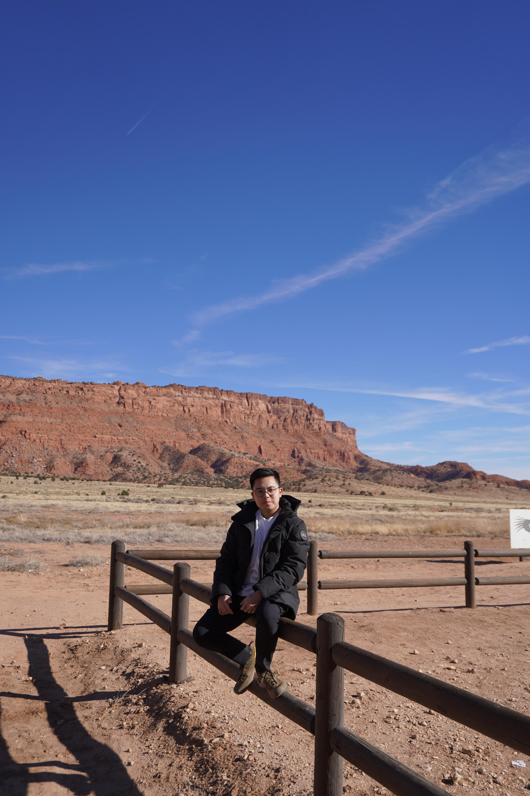

I’m deeply immersed in my engineering studies, focused on innovative technologies and practical solutions. Yet, there’s always a quiet voice within me longing to leave everything behind, travelling across continents, capturing human stories through my camera lens.
My passion lies in renewable energy, driven by a mission to make the world cleaner and more sustainable for future generations. But sometimes, I wonder how exhilarating it would be to pioneer an IoT start-up—revolutionising agriculture, healthcare, or even everyday life.
Living abroad has expanded my horizons, exposing me to vibrant cultures, challenging my beliefs, and reshaping who I am. However, a part of my heart frequently whispers about returning home to Indonesia—re-connecting deeply with my roots, culture, and family.
Technology and innovation excite and motivate me daily, fuelling my dreams and ambitions. Yet beneath all these layers of ambition, my spiritual journey remains profound, guiding my decisions and shaping my values beyond what the world sees.
From the outside, my path might seem clear and meticulously planned, as if I’m confidently heading towards a known destination. But deep inside, I celebrate life’s uncertainties, secretly cherishing the unknown possibilities and surprises that tomorrow might bring.